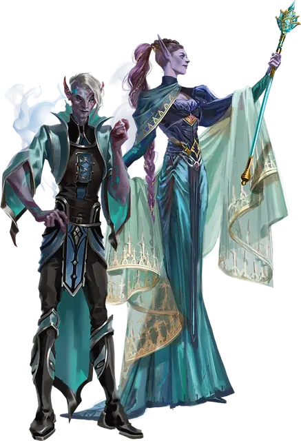

Дворянин фомор
Fomorian Noble
Огромный Великан (Волшебник), обычно хаотично-злой

Класс Доспеха 14 (17 с доспехом мага)
Хиты 253 (22к12 + 110)
Скорость 30 футов
| мод | спас | ||
|---|---|---|---|
| СИЛ | 23 | +6 | +6 |
| ЛОВ | 18 | +4 | +4 |
| ТЕЛ | 20 | +5 | +5 |
| мод | спас | ||
|---|---|---|---|
| ИНТ | 19 | +4 | +9 |
| МДР | 14 | +2 | +7 |
| ХАР | 16 | +3 | +8 |
Навыки Восприятие +7, Магия +14, Скрытность +9
Иммунитет к состояниям очарование
Чувства пассивное Восприятие 17
Языки Великаний плюс три любых языка
Опасность 15 (13000 опыта)
Бонус мастерства +5
Действия
Мультиатака. Фомор совершает три атаки Жезлом.
Жезл. . Рукопашная атака оружием: +11 к попаданию, досягаемость 10 фт., одна цель. Попадание: 16 (3к6 + 6) дробящего урона плюс 11 (2к10) урона силовым полем.
Использование заклинаний. Фомор накладывает одно из следующих заклинаний, используя Интеллект в качестве базовой характеристики (Сл спасброска от заклинаний 17):
• Неограниченно: доспехи мага [mage armor] (только на себя), волшебная рука [mage hand], фокусы [prestidigitation];
• 1/день каждое: пляшущая молния [chain lightning], конус холода [cone of cold] (вариант 6-го уровня), огненный шар [fireball] (вариант 6-го уровня), полёт [fly], уход в иной мир [plane shift] (только на себя).
Бонусные действия
Чарующее присутствие. Фомор нацеливается на существо, которое он может видеть в пределах 60 футов от себя. Цель должна преуспеть в спасброске Мудрости Сл 17, иначе станет очарованным на 1 минуту. Очарованная цель может повторять спасбросок в конце каждого своего хода и каждый раз, когда она получает урон, оканчивая на себе действие эффекта в случае успеха. Если цель преуспевает в спасброске или эффект для нее оканчивается, цель становится невосприимчивой к Чарующему присутствию всех фоморов на следующие 24 часа.
Описание
Дворяне фоморы, встреченные мной, настолько нераскаявшиеся и настолько равнодушные к бедственному положению своих проклятых сородичей, что мне с трудом удается принять их как своих кузенов.
— Дианкастра
Происходящие от сына Аннама - Каронтора, фоморы когда-то занимали место в иерархии великанов между холмовыми и каменными великанами. В древние времена они были знатоками магии, известными своим острым интеллектом, но также и своим раздутым эго и чувством собственного достоинства. Каронтор воспользовался этими качествами, соблазняя их обещаниями более высокого положения в Уложении, и подстрекнул своих потомков начать наступление на Царство Фей. Когда атака провалилась, фоморы были изгнаны в Подземье, а их бог заключен в подземную тюрьму. Подвергнувшись странной магии Подземья, тела и души фоморов искажались, пока они не стали современными фоморами.
дворянин фомор
До своего изгнания в Подземье фоморы самоорганизовывались, основываясь на достижениях знаний и магической силы. Прежде чем Каронтор подтолкнул своих потомков к злополучному нападению на Царство Фей, некоторые из самых амбициозных, любознательных и жаждущих власти фоморов почувствовали, что они уже узнали всё, что могли на Материальном плане и они отправились на Внутренние планы, где могли беспрепятственно продолжать свои путешествия за знаниями.
В своем высокомерии эти дворяне фоморы неосознанно избежали ужасной участи своих сородичей, и они остаются неизменными в своих отдаленных анклавах. Время от времени они возвращаются на Материальный план, чтобы посмотреть мир, который они покинули. С угловатыми чертами и явно нестареющими лицами эти фоморы напоминают гигантских эльфов.